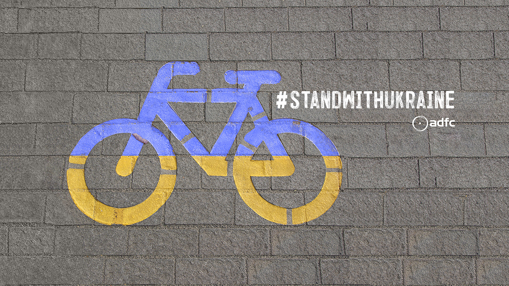
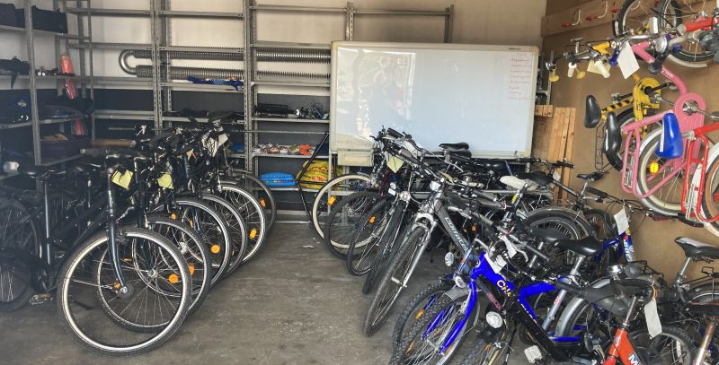

|
Über uns Fahrrad-Selbsthilfewerkstatt Radtouren Verkehrspolitik Mängelkarte |
 Diese Seite |
|
|
Eilmeldungen Ankündigungen Terminkalender | ||
|
Touren 2021 Über Verkehrspolitik Über “Dies & Das” |
||
|
Impressum Werde Mitglied Spendenkonto |
Eine Ortsgruppe des ADFC’s Region Hannover e.V

Der ADFC Hemmingen/Pattensen ist betroffen und schockiert über den Angriff auf die Ukraine, über einen Krieg in Europa. Wir drücken allen Menschen in der Ukraine unsere volle Solidarität aus und hoffen auf ein baldiges friedliches Ende. In Erwartung von Geflüchteten in Hemmingen und Pattensen sammelt der ADFC Fahrradspenden, besonders Kinder- und Damenräder zur Aufbereitung und Weitergabe. Spender:innen melden sich bitte unter der Mailadresse ✉ Fahrrad-Selbsthilfewerkstatt-Hemmingen@web.de, es werden dann Übergabetermine vereinbart, da die Werkstatt pandemiebedingt noch geschlossen ist, vielen Dank!
|
Über uns Fahrrad-Selbsthilfewerkstatt Radtouren Verkehrspolitik Mängelkarte |
Diese Seite |
|
|
Eilmeldungen Ankündigungen Terminkalender | ||
|
Touren 2021 Über Verkehrspolitik Über “Dies & Das” |
||
|
Impressum Werde Mitglied Spendenkonto |
| Rubriken |
Der ADFC Hemmingen Pattensen (Allgemeiner Deutscher Fahrrad Club) engagiert für eine gute Fahrradinfrastruktur und ein fahrradfreundliches Klima. Erste Aktivitäten starteten 2013, seit Mai 2015 und mit mittlerweile rund 141 Mitglieder (Stand April 2021) und weiteren Ehrenamtlichen, engagiert sich der ADFC Hemmingen Pattensen offiziell in den beiden Städten für …
Diese vier zentralen Themenfelder werden in unser PDF-Broschüre kurz vorgestellt.
Gliederungen
ADFC Hemmingen Pattensen Neuzugänge
| Jahr | Neuzugänge |
|---|---|
| 2017 | 9 |
| 2018 | 10 |
| 2019 | 18 |
| 2020 | 23 |
| 2021 | 30 |

Die Fahrrad-Selbsthilfe-Werkstatt (FSW) des ADFC Hemmingen/Pattensen in der Heinrich-Hertz-Straße 23 in Hemmingen wird, nach der Delta- und Omikron-Pause, ab dem 22. März 2022 den Notbetrieb wieder aufnehmen. Wenn die aktuelle Baustellensituation es zulässt, wird Dienstags von 17:30 bis 19:00 jemand vor Ort sein und Sie im Außenbereich beraten. Beachten Sie bitte die Absperrbänder, halten Sie Abstand und tragen Sie eine Schutzmaske.
Das Team und der ADFC Hemmingen Pattensen wünschen allen Radelnden eine gesunde und pannenfreie Fahrt mit dem Rad. Radfahren stärkt das Immunsystem und schützt das Klima! Für Fahrradspenden, besonders Kinder- und Damenräder zur Aufbereitung und Weitergabe, bitten wir um Nachricht unter der Mailadresse ✉ Fahrrad-Selbsthilfewerkstatt-Hemmingen@web.de. Unsere Fahrrad-Selbsthilfe-Werkstatt PDF-Broschüre.

In Hemmingen gibt es folgende Reparaturmöglichkeiten:
IBAN: DE97 2509 0500 0000 9205 50,
BIC: GENODEF1S09 (Sparda Bank Hannover e.G.)
Verwendungszweck: “ADFC Selbsthilfewerkstatt Hemmingen” und Anschrift (für eine Spendenbescheinigung)

Spontane, kostenlose Feierabendradtouren werden bei entsprechendem Wetter (Sommer) in der Regel Mittwochs angeboten. Die ADFC Ortsgruppe hat dafür eine E-Mail Liste angelegt. Wir melden uns, wenn es passt. Wer auf dieser Liste möchte, schreibe bitte an j.spille@adfc-hannover.de.
Lasten zu groß? Keine Ausrede Leihen Sie sich kostenlos ein Hannah Lastenrad unter https://www.hannah-lastenrad.de/. Hilfe, Fragen und Wünsche zur Hannah gibt unter hallo@hannah-lastenrad.de.
Gefährliche Querungen, Unfallschwerpunkte und Mängel auf Rad- und Fußwegen sammeln wir auf unserer Mängelkarte.
siehe Mängelkarte für Hemmingen und Pattensen
| Aktuelles |


Aktuell erhalten Sie für begrenzte Zeit unsere Jahresmitgliedschaft für nur 19,50 € (regulär 66 €) im ersten Jahr!
Hier geht es zur Anmeldung.
Sie erhalten das komplette Vorteilpaket inklusive Pannenhilfe, Haftpflicht/Rechtsschutz und Radwelt-Magazin für 12 Monate. Das Angebot gilt auch für Familien- und Haushaltsmitgliedschaften (regulär 78 €). Voraussetzung für Familien- und Haushaltsmitgliedschaften ist ein gemeinsamer Wohnsitz. Die Mitgliedschaft wird unbefristet abgeschlossen, ist aber jederzeit ohne Frist zum Ende des laufenden Beitragsjahres kündbar.
Mit Ihrer Mitgliedschaft unterstützen Sie den ADFC in ganz Deutschland - für lebenswerte Städte und eine echte Verkehrswende mit dem Fahrrad im Mittelpunkt.
Vollbildanzeige - Ein Service von Teamup Solutions AG in Zurich
| Artikel |
Hier kommt eine kurze Übersicht der Themen, die uns in letzter Zeit beschäftigt haben. Solltet Ihr Euch zusätzliche Inhalte wünschen, oder wollt Ihr Lob oder Verbesserungspotential loswerden, dann freuen wir uns über einen kurzen Kommentar an j.spille@adfc-hannover.de.
Tempo 30 ist jetzt die Regelgeschwindigkeit in Paris. Nach Madrid, Brüssel, Grenoble, Helsinky, Lille, Zürich und Barzelona folge nun auch Paris. Auf den Straßen von Paris gilt seit Ende August 2021 fast flächendeckend Tempo 30. Siehe auch https://www.adfc.de/artikel/gute-gruende-fuer-tempo-30.
Aufgrund einer Fahrbahn- und Radwegsanierung wurde vom 26. August bis zum 17. Dezenber 2021 die Wülfeler Straße vom Parkplatz an der Wülfeler Straße bis zur “Pferdeampel” am Ortseingang Wilkenburg voll gesperrt. Eine Durchfahrt durch die Wülfeler Straße in diesem Bereich war für Radefahrende der L389 in der gesamten Bauzeit nicht möglich. Eine Umleitung über “Dorrieweg” und “Im Hammfeld” wurde ausgeschildert.
2021-08-26-Do.
Wählen verändern die Welt, wenn die Wählenden es so wollen…
Wahlprüfsteine sind ein bewährtes Mittel von den Kandidierenden zu erfahren, wie sie sich grundsätzlich und im Besonderen positionieren, was sie wollen und wie sie es umsetzen würden, wenn…ja wenn sie gewählt werden.
Der ADFC Hemmingen/ Pattensen hat darum 8 Schlüsselfragen an die Kandidierenden für das Amt der Bürgermeisterin des Bürgermeisters in Hemmingen verschickt. Mit Themen wie Tempo 30, Abstandsregeln beim Überholen, Komfort für Radfahrende, Sicherheit, Radwegeausbau, Unterstützung der Fahrrad-Selbsthilfewerkstatt, Stadtverkehrsentwicklung und Budget für Verbesserungen ist viel abgedeckt. Alle, Frau Dr. Schröder, Herr Dingeldey, Herr Grambeck und Herr Harder haben geantwortet. Die Antworten sind auf unserer Webseite des ADFC veröffentlicht:
Dort können die Antworten von allen nachgelesen werden. Denn Wahl bedeutet ja Entscheidung treffen und Vertrauen auf die Inhalte und Personen setzen. Dazu hat der ADFC einen kleinen Baustein geliefert und es liegt an den Wählenden, sich daraufhin ihre Meinung zu bilden. Wir bleiben gespannt.
Vom 01. Mai und bis 31. August lief die ADFC/AOK-Aktion Mit-dem-Rad-zur-Arbeit. Auch hier konnten alle mitmachen, es zählten aber nur die Kilometer zur und von der Arbeit.
Alle Informationen gab es auf https://www.mit-dem-rad-zur-arbeit.de/niedersachsen/index.php
gantt dateFormat YYYY-MM-DD title Gemeinsames Radeln 2021 axisFormat %d.%m section 2021 2021: done, 2021-01-01, 2021-12-31 section Stadtradeln Stadtradeln 2021: 2021-06-06, 2021-06-26 Fahrraddemo 6.6.: done, 2021-06-06, 1d Anderter Schleuse: done, 2021-06-23, 1d Gehrden: done, 2021-06-30, 1d Ruthe: done, 2021-07-07, 1d Benther Berg: done, 2021-07-14, 1d Holtensen: done, 2021-07-25, 1d Julius-Trip-Ring: done, 2021-08-11, 1d Gestorf: done, 2021-08-25, 1d Giftener Seen: done, 2021-09-01, 1d Ditterker Wald: done, 2021-09-08, 1d Eilenriede: done, 2021-09-15, 1d Tierpark Kronsberg: done, 2021-10-13, 1d Sarstedt Ahrbergen: done, 2021-10-20, 1d
und das waren die gefahrenen Routen:
Zu den TourenbeschreibungenDie 12. Radtour startete am Mittwoch den 20. Oktober mit 8 Radlern. Bei stürmischen Winden fuhren wir in die Leinemasch Richtung Rethen. Weiter ging es durch die Koldinger Seenplatte nach Ruthe. An der Innerste entlang ging es nach Saarstedt. Am Bruchgraben, einer sehr schönen Flusslandschaft fuhren wir weiter nach Ahrbergen. Zurück ging es wieder nach Sarstedt zu einem schönen Cafe. Nach einer kurzen Rast ging es dann zurück. Nach ca. 4 Std. und 43 km erreichten wir gut gelaunt Hemmingen.
| Tourenziel | Sarstedt Ahrbergen |
|---|---|
| Datum | 2021-10-20-Mi |
| Tourenrart | Feierabend |
| Tourenleiter | Günther Kleinod |
| Start | Hemmingen Rathaus 13:00 |
| Dauer [Stunden] | ca. 4 |
| Teilnehmerzahl | 8 |
| Tourenlänge [km] | 43 |
| Wetter | Wolkig und stürmisch |
Die 11. Radtour startete am Mittwoch den 13. Oktober mit 7 Radlern. Bei zeitweise leichtem Nieselregen war klar, möglichst viel im Wald zu fahren. Es ging durchs Ricklinger Holz zum Maschsee. Von dort weiter durch den Hermann Löns Park zum Tierpark. Nach einer kurzen Pause ging es wieder zum Kronsberg und durch die Leinemasch zurück. Nach ca. 2,5 Std. und 28 km erreichten wir, fast trocken, Hemmingen.
| Tourenziel | Tierpark Kronsberg |
|---|---|
| Datum | 2021-10-13-Mi |
| Tourenrart | Feierabend |
| Tourenleiter | Günther Kleinod |
| Start | Hemmingen Rathaus 16:00 |
| Dauer [Stunden] | ca. 2,5 |
| Teilnehmerzahl | 7 |
| Tourenlänge [km] | 28 |
| Wetter | regnerisch |
Die 7. Feierabend-Radtour startete am Mittwoch den 15. September mit 6 Radlern. Bei zeitweise leichtem Nieselregen war klar, möglichst viel im Wald zu fahren. Es ging durchs Ricklinger Holz zum Maschsee. Von dort in die Eilenriede, vorbei am Zoo, Seuerndieb. Nach einer kurzen Pause ging es wieder zum Machsee und in die Leinemasch. Nach ca. 2,5 Std. und 26 km erreichten wir, fast trocken, Hemmingen.
| Tourenziel | Maschsee, Eilenriede |
|---|---|
| Datum | 2021-09-26-Mi |
| Tourenrart | Feierabend |
| Tourenleiter | Günther Kleinod |
| Start | Hemmingen Rathaus 16:00 |
| Dauer [Stunden] | ca. 2,5 |
| Teilnehmerzahl | 6 |
| Tourenlänge [km] | 26 |
| Wetter | regnerisch |
Die 9. Feierabend-Radtour ging am Mittwoch den 15. Sept. bei gutem Wetter über Wettbergen und Empelde zum Benther Berg. Wir sind gemütlich um die Nordseite geradelt, und dann ging es an Northen vorbei, an vielen Feldern entlang zum Ditterker Wald. Auf guten Wegen fuhren wir im dichten schattigen Wald. Nach einer kurzen Pause ging es nach Everloh. An Ronnenberg vorbei erreichten wir die Kückenmühle, mit anschliessender Einkehr. Nach ca. 3 Stunden, 35 km und einer schönen Fahrt waren wir wieder zurück in Hemmingen.
| Tourenziel | Benther Berg und Ditterker Wald |
|---|---|
| Datum | 2021-09-26-Mi |
| Tourenrart | Feierabend |
| Tourenleiter | Günther Kleinod |
| Start | Hemmingen Rathaus 16:00 |
| Dauer [Stunden] | ca. 3 |
| Teilnehmerzahl | 11 |
| Tourenlänge [km] | 35 |
| Wetter | heiter bis wolkig |
Die Fahrt ging mit 10 Radlern durch Harkenbleck, Koldingen und Ruthe. Nach einem kurzen Abstieg gelangt man an die Leine und kommt nach Schliekum. Wir fahren über die Leinebrücke und kommen zu den Giftener Seen. Der Rückweg führt uns über Sarstedt, mit Rast an der Eisdiele. Anschließend fahren wir an der Innerste entlang nach Ruthe und weiter nach Koldingen. Durch die Leinemasch fahren wir dann weiter und erreichten Hemmingen nach ca. 3 Std und 34 km.
| Tourenziel | Giftener Seen und Sarstedt |
|---|---|
| Datum | 2021-09-01-Mi |
| Tourenrart | Feierabend |
| Tourenleiter | Günther Kleinod |
| Start | Hemmingen Rathaus 17:00 |
| Dauer [Stunden] | ca. 3 |
| Teilnehmerzahl | 10 |
| Tourenlänge [km] | 34 |
| Wetter | heiter bis wolkig |
Die 7. Feierabend-Radtour startete am Mittwoch den 25. August mit 12 Radlern ins Calenberger Land. Wir fuhren durch Pattensen und durch die Feldmark nach Oerie bis zum Oerier Wald. Dort machten wir die erste Rast. Weiter ging es durch Feld, Wiese und Wald nach Gestorf. Der Rückweg, auf dem wir ordentlichen Gegenwind hatten, ging auf einem schönen Feldweg nach Lüdersen und weiter, an den Feldern und Äckern vorbei, nach Hiddestorf. Über Ohlendorf und Devese erreichten wir nach ca. 3 Std und 36 km Hemmingen
| Tourenziel | Calenberger Land nach Gestorf |
|---|---|
| Datum | 2021-08-25-Mi |
| Tourenrart | Feierabend |
| Tourenleiter | Günther |
| Start | Hemmingen Rathaus 17:00 |
| Dauer [Stunden] | ca. 3 |
| Teilnehmerzahl | 12 |
| Tourenlänge [km] | 36 |
| Wetter | heiter bis wolkig und windig |
Die 6. Feierabend-Radtour startete am Mittwoch den 11. August mit 14 Radlern zum Julius-Trip-Ring. Die Fahrt ging durch die Leinemasch zum Maschsee. Dort stiegen wir in den Julius-Trip-Ring ein. Weiter ging es durch die Eilenriede, am Pferdeturm vorbei zum Zoo. An Vier Grenzen überquerten wir die Podbi und fuhren auf den Pastor-Jäckel-Weg, Niedersachsenring und dem Hans-Meinecke-Weg nach Hainholz. Vorbei am Berggarten kamen wir zu den Herrenhäuser Gärten. Am Leibnitz Tempel machten wir eine kurze Rast. Auf der Dornröschenbrücke überquerten wir die Leineund fuhren dann an Leine und Ihme entlang zurück. Nach ca. 3 Stunden flotter und schöner Fahrt, fast immer im Grünen, erreichten wir nach 33 km Hemmingen.
| Tourenziel | Julius-Trip-Ring |
|---|---|
| Datum | 2021-08-11-Mi |
| Tourenrart | Feierabend |
| Tourenleiter | Günther |
| Start | Hemmingen Rathaus 17:00 |
| Dauer [Stunden] | ca. 3 |
| Teilnehmerzahl | 14 |
| Tourenlänge [km] | 33 |
| Wetter | heiter bis wolkig |
| Tourenziel | Holtensen, Vörier Berg |
|---|---|
| Datum | 2019-07-28-Mi |
| Tourenrart | Feierabend |
| Tourenleiter | Günther |
| Start | Hemmingen Rathaus 16:00 |
| Dauer [Stunden] | ca. 3 |
| Teilnehmerzahl | 12 |
| Tourenlänge [km] | 32 |
| Wetter | heiter bis wolkig |
| Tourenziel | Ihme, Ahlem, Benther Berg |
|---|---|
| Datum | 2021-07-14-Mi |
| Tourenrart | Feierabend |
| Tourenleiter | Günther |
| Start | Hemmingen Rathaus 17:00 |
| Dauer [Stunden] | ca. 2 1/2 |
| Teilnehmerzahl | 11 |
| Tourenlänge [km] | 34 |
| Wetter | heiter bis wolkig |
Die Fahrt ging mit 12 Radlern durch die Leinemasch, vorbei an Laatzen nach Rethen. Durch die Koldiger Seen zu einer Aussichtsplattform. Weiter ging es nach Ruthe mit einem kurzen Abstecher zum Zusammenfluss von Innerste und Leine mit einer kurzen, aber sonnigen Rast. Danach ging es in Ruthe einen steilen Abhang hinab und an der Leine nach Schliekum. Der Rückweg ging durch das Calenberger Land nach Pattensen direkt zu einer Eisdiele. Nach einer kurzen Pause fuhren wir durch das romantische Fuchsbachtal nach Reden, Harkenbleck und Wilkenburg. Nach einer schönen Fahrt holte uns am Ende doch noch der Regen ein. Wir erreichten Hemmingen nach ca. 34 km.
| Tourenziel | Ruthe |
|---|---|
| Datum | 2021-07-07-Mi |
| Tourenrart | Feierabend |
| Tourenleiter | Günther Kleinod |
| Start | Hemmingen Rathaus 17:00 |
| Dauer [Stunden] | ca. 3 |
| Teilnehmerzahl | 7 |
| Tourenlänge [km] | 34 |
| Wetter | Heiter bis wolkig mit etwas Regen |
Die 2. Feierabend-Radtour startete am Mittwoch den 30. Juni mit 7 Radlern. Bei dunklen Wolken und angekündigtem Regen fuhren wir gen Westen über Wettbergen nach Ronnenberg und weiter Richtung Gehrden. Anschliessend fuhren wir nach Lemmie und danach ging es am Bahndamm entlang nach Weetzen. Über Vörie ging es dann weiter nach Ihme-Roloven. An den Wasserbüffeln vorbei umfuhren wir Ihme-Roloven und dann ging es weiter durch das Bürgerholz nach Hemmingen, das wir nach ca. 2,5 Std. und 33 km, immer noch trocken, erreichten.
| Tourenziel | Gehrden |
|---|---|
| Datum | 2019-06-30-Mi |
| Tourenrart | Feierabend |
| Tourenleiter | Günther Kleinod |
| Start | Hemmingen Rathaus 17:00 |
| Dauer [Stunden] | ca. 2 1/2 |
| Teilnehmerzahl | 7 |
| Tourenlänge [km] | 33 |
| Wetter | Dunkle Wolken mit Regenankündigung |
Die 1. Feierabend-Radtour ging am Mittwoch den 23. Juni mit 13 Radlern (11 Herren und 2 Damen) bei gutem Wetter, durch das Ricklinger Holz, am Maschsee vorbei in die Eilenriede. Weiter ging es durch den Herrmann-Löns-Park mit der “Alten Mühle”, einer Bockwindmühle, zur Anderter Schleuse. Nach einer kurzen Rast ging es auf den höchsten Punkt des Kronsbergs (118 m ü. NN). Die schöne Aussicht über Hannover, den Deister und die Hildesheimer Berge entschädigte für den letzten steilen Anstieg. Am Wiesendachhaus konnten wir noch einen schönen Zwischenstop einlegen. Nach ca. 3 Std. und 34 km erreichten wir wieder Hemmingen.
| Tourenziel | Anderter Schleuse u. Kronsberg |
|---|---|
| Datum | 2021-06-23-Mi |
| Tourenrart | Feierabend |
| Tourenleiter | Günther Kleinod |
| Start | Hemmingen Rathaus 17:00 |
| Dauer [Stunden] | ca. 3 |
| Teilnehmerzahl | 13 |
| Tourenlänge [km] | 34 |
| Wetter | heiter bis wolkig |
Aus dem Presseportal der Polizei:
Die Fahrradstaffel der Polizei Hannover hat am Montagmorgen, 19.07.2021, im Berufsverkehr eine Kontrollstelle in der Wedekindstraße eingerichtet. Die Beamten hatten Autofahrende im Blick, die Radfahrende überholt haben. Dabei stellten sie auf einer kurzen Kontrollstrecke bei 33 Überholmanöver 17 Verstöße fest. … Zur Stärkung des Radverkehrs wurden mit Wirkung vom 28.04.2020 verschiedene Neuerungen im Radverkehr eingeführt. … Demnach müssen Kraftfahrzeugfahrende beim Überholen von zu Fuß Gehenden, Radfahrenden und Elektrokleinstfahrzeugführenden (z.B. E-Scooter) einen Mindestüberholabstand von 1,5 Meter innerorts und zwei Metern außerorts einhalten. Dieser Mindestabstand gilt auch bei separat geführten vorhandenen Radverkehrsanlagen.

Beim Wettbewerb STADTRADELN traten die Hemminger und Pattenser 21 Tage in die Pedale für mehr Radförderung, Klimaschutz und Lebensqualität in unserer Kommune.
vom 06. Juni bis 26. Juni 2021
Die Städte Hemmingen und Pattensen in der Region Hannover nahmen vom 06. Juni bis 26. Juni 2021 am STADTRADELN teil. Alle, die in den Städten in der Region Hannover wohnten, arbeiteten, einem Verein angehören oder eine (Hoch-)Schule besuchen, konnten beim STADTRADELN mitmachen.
Hier registrieren:
oder lade die STADTRADELN-App herunter, um deine Strecken zu tracken.
Aufgrund der besonderen Situation mit vielfältigen Einschränkungen des öffentlichen Lebens wegen der Corona-Pandemie steht auch in diesem Jahr im Vordergrund, den Radverkehr in Hemmingen voranzubringen und viele Bürgerinnen und Bürger für die Vorteile des Radfahrens im Alltag zu gewinnen. Die Stadt Hemmingen führt die Aktion gemeinsam mit dem ADFC Hemmingen Pattensen durch.
Dennoch wollen wir natürlich auch dem Wettbewerbsgedanken folgen und in diesem Jahr wieder einen der vorderen Plätze im Regionsranking erringen. Das Stadtradeln beginnt am Sonntag, dem 06. Juni 2021 und endet am 26. Juni 2021. Beim Stadtradeln sollen sich auch diesmal Teams bilden und möglichst viele Kilometer beruflich sowie privat mit dem Fahrrad zurücklegen, natürlich unter Beachtung der dann aktuell geltenden Corona-Hygieneregeln und Kontaktbeschränkungen. Bitte beachten Sie diese bei gemeinsamen Fahrten, denn wir möchten vermeiden, dass es ausgerechnet bei gemeinsamen Radtouren zu Ansteckungen kommt.
Im Online-Radelkalender auf www.stadtradeln.de können sich die Teams und Radelnde registrieren und die gefahrenen Kilometer dann eintragen. Gesucht wird Deutschlands fahrradaktivste Kommune mit den meisten Radkilometern (absolut) sowie mit den meisten Radkilometern pro EinwohnerIn (Durchschnittswert).
Und so machen sie mit:
Jeder einzelne Kilometer von Ihnen bringt Sie, Ihr Team, die Stadt Hemmingen und den Klimaschutz voran!
Anregungen für interessante Touren und Fahrradaktivitäten findet man über die kostenlose Fahrrad-App „Bike Citizens“ der Region Hannover. Dort stehen bereits jetzt die Routen der fast 1.000 Kilometer langen FAHRRADREGION Hannover zum Nachradeln zur Verfügung. Darüber hinaus hilft die App der Region Hannover bei der Radwegplanung, da Schwachstellen durch das Sammeln der anonymisierten Daten identifiziert werden können und bessere Daten für die Radwegplanung zur Verfügung stehen.
Hier finden Sie die App:
Weitere Informationen finden Sie auf der Homepage der Region Hannover unter
Auslöser für die Prüfung durch das Verkehrsministerium war eine von der Niedersächsischen Landesbehörde für Straßenbau und Verkehr (NLStBV) abgelehnte Förderung für den Neubau der Brücke über die Arnumer Landwehr im Zuge der K 226. Wegen der geltenden Geschwindigkeitsbegrenzung in Hiddestorf seien die Voraussetzungen dafür nicht mehr gegeben. Der ADFC ist gegen die Erhöhung der Geschwindigkeit. Eine Erhöhung der Geschwindigkeit erhöht sowohl die Unfallgefahr als auch das Sicherheitsgefühl.
10.06.2021
Die Entwicklung der Radverkehrsanlagen liegt Ihnen am Herzen und Sie möchten einen großen Beitrag für die Allgemeinheit der Stadt Langenhagen leisten? Dann bewerben Sie sich gerne in Langenhagen!
Infos unter www.arbeiten-in-langenhagen.de. Bewerbungsfrist: 20.06.2021.
In 11 Etappen mit dem Rad durch Deutschland
Vom 22. August bis zum 2. September zeigen Aktivist*innen von Changing Cities mit einer Fahrraddemo von Essen nach Berlin, dass die Verkehrswende möglich und machbar ist. Als Teil der bundesweiten Protestaktion Ohne Kerosin nach Berlin werden Hunderte von Radfahrer*innen in Deutschland unterwegs sein.
Pünktlich zum Bundestagswahlkampf 2021 fahren wir in 11 Etappen mit dem Rad nach Berlin und setzen die Themen Mobilität und Klimaschutz auf die bundespolitische Agenda. Die „Tour de Verkehrswende“ fährt unter dem Motto „Wir bringen Paris nach Berlin“, denn die Politik der pariser Bürgermeisterin Anne Hidalgo zeigt: Die klima- und menschenfreundliche Verkehrswende ist politisch möglich und praktisch umsetzbar. Seit 2014 wird die französische Hauptstadt in großen Teilen nachhaltig umgestaltet. Um die Feinstaub- und Lärmbelastung zu reduzieren und die Lebensqualität der Menschen zu verbessern, wird der Ausbau von Fuß- und Radwegen deutlich vorangetrieben und große Bereiche des Zentrums für Menschen geöffnet und für den Autoverkehr gesperrt.
„Auch für deutsche Städte und Gemeinden fordern wir einen solchen Strukturwandel in der Mobilitätspolitik. Weil die Zukunft dem Fuß- und Radverkehr sowie dem ÖPNV gehört. Denn auch in Deutschland gilt: Mit dem Fahrrad lassen sich Wahlen gewinnen,” sagt Ragnhild Sørensen von Changing Cities.
Die Forderungen der #TourDeVerkehrswende an die nächste Bundesregierung
Die 600 km lange Tour trägt die Pariser Botschaft auch durch Städte, die Fuß- und Radentscheide auf die Beine gestellt haben. Entlang der Strecke gibt es Treffen mit Initiativen, Organisationen, und Politiker*innen, denen eine klimaverträgliche Verkehrswende ein Anliegen ist. Im Fokus steht der Austausch mit Menschen, die von den Fehlern und Versäumnissen der Verkehrspolitik am stärksten betroffen sind. An den Etappenzielen werden gemeinsam mit Unterstützer*innen Aktionen zur Klima- und Verkehrswende stattfinden.
Aufgrund der Pandemie-Lage wird es ein umfassendes Hygienekonzept geben. Alle Veranstaltungen, sowie Übernachtungen finden draußen und mit Abstand und Maske statt.
ROUTE Die Etappen der #TourDeVerkehrswende im August 2021: 22.8. Essen – Marl – Haltern am See (40 km) 23.8. Haltern am See – Dülmen – Münster (45 km) 24.8. Münster – Bielefeld (75 km) 25.8. Bielefeld – Rinteln (50 km) 26.8. Rinteln – Hannover (60 km) 28.8. Hannover – Braunschweig (70 km) 29.8. Braunschweig – Helmstedt (40 km) 30.8. Helmstedt – Magdeburg (50 km) 31.8. Magdeburg – Brandenburg an der Havel (85 km) 1.9. Brandenburg an der Havel – Werder – Potsdam (65 km) 2.9. Potsdam – Berlin (35 km)
Tragen Sie grundsätzlich einen Helm, wenn sie im Straßenverkehr fahren?
Besser ist es. Eine Untersuchung der Deutschen Gesellschaft für Unfallchirurgie ergab 2017, dass es bei rund 25 Prozent aller Fahrradunfälle Kopfverletzungen gibt.
Das Fahrrad ist ein Fahrzeug – und Radfahrende sind Fahrzeugführende mit allen Rechten und Pflichten. Deshalb gelten zunächst die allgemeinen Regeln für den Fahrzeugverkehr. Auf diese Regeln geht der folgende Beitrag nur ein, wenn sie besondere Bedeutung für Radfahrende haben. Außerdem enthält die Straßenverkehrs-Ordnung (StVO) Vorschriften speziell für den Radverkehr. Um diese Vorschriften, ihre Beachtung und mögliche Konflikte soll es hier vor allem gehen.
Verkehrsrecht_fuer_Radfahrende als PDF
ARD hr-Fernsehen Sicherheit auf Radwegen - was bringen die neuen Regeln

Nach einer Studie der Bundesanstalt für Straßenwesen (BASt 2015) fahren bis zu 20 % der Rad fahrenden auf Radwegen entgegen der vorgesehenen Fahrtrichtung. Dieses sogenannte „Geisterradeln“, also das regelwidrige Linksfahren, gehört zu den Hauptursachen der Unfälle, die durch den Radverkehr selbst verursacht werden.
StVO Novelle. Das Bundesministerium für Verkehr und digitale Infrastruktur plant eine Stärkung des Radverkehrs.
Unter anderem: Mindestüberholabstand, Einschränkungen für rechtsabbiegende Kraftfahrzeuge, Haltverbot auf Schutzstreifen, Klarstellung zum Nebeneinanderfahren, …
Mindestüberholabstand für Kfz: Es wird ein Mindestüberholabstand von 1,5 m innerorts und von 2 m außerorts für das Überholen von zu Fuß Gehenden, Radfahrenden und Elektrokleinstfahrzeugführenden durch Kraftfahrzeuge festgeschrieben. Bisher schreibt die StVO lediglich einen „ausreichenden Seitenabstand“ vor. Schrittgeschwindigkeit für rechtsabbiegende Kraftfahrzeuge über 3,5 t
Für rechtsabbiegende Kraftfahrzeuge über 3,5 t soll aus Gründen der Verkehrssicherheit innerorts Schrittgeschwindigkeit (7 bis 11 km/h) vorgeschrieben werden. Verstöße können künftig mit einem Bußgeld in Höhe von 70 Euro sanktioniert werden. Zudem wird ein Punkt im Fahreignungsregister eingetragen. Grünpfeil ausschließlich für Radfahrer
Mit der StVO-Novelle wird die bestehende Grünpfeilregelung auch auf Radfahrer ausgedehnt, die aus einem Radfahrstreifen oder baulich angelegten Radweg heraus rechts abbiegen wollen. Außerdem wird ein gesonderter Grünpfeil, der allein für Radfahrer gilt, eingeführt.
Generelles Haltverbot auf Schutzstreifen: Schutzstreifen für den Radverkehr trennen den Rad- und den Autoverkehr mit einer gestrichelten weißen Linie (Zeichen 295 der StVO). Autos dürfen dort zwar nicht parken, aber bislang noch bis zu drei Minuten halten. Dies führt vielfach dazu, dass die Radfahrenden Schutzstreifen nicht durchgängig nutzen können, weil ihnen haltende Autos den Weg versperren. Deshalb wollen wir dort ein generelles Haltverbot einführen. Einrichtung von Fahrradzonen
Analog zu den Tempo 30-Zonen sollen in Zukunft auch Fahrradzonen angeordnet werden können. Die Regelung soll sich an den Regeln für Fahrradstraßen orientieren: Für den Fahrverkehr gilt eine Höchstgeschwindigkeit von 30 km/h. Der Radverkehr darf weder gefährdet noch behindert werden. Auch Elektrokleinstfahrzeuge sollen hier künftig fahren dürfen.
Klarstellung zum Nebeneinanderfahren von Radfahrenden: Das Nebeneinanderfahren von Radfahrenden ist ausdrücklich erlaubt, wenn der Verkehr dadurch nicht behindert wird. Die bisherige Formulierung in der StVO stellt das Hintereinanderfahren in den Vordergrund und kann daher missverstanden werden.
Ausweitung des Parkverbots vor Kreuzungen und Einmündungsbereichen: Das Parken vor Kreuzungen und Einmündungen soll in einem Abstand von bis zu je 8 m von den Schnittpunkten der Fahrbahnkanten oder bis zu je 5 m vom Beginn der Eckausrundung verboten werden, wenn ein straßenbegleitenderbaulicher Radweg vorhanden ist, der als benutzungspflichtig oder mit Radsinnbildgekennzeichnet ist. Hierdurch soll die Sicht zwischen Straße und Radweg verbessert und dadurch die Sicherheit von Radfahrenden erhöht werden.
Vereinfachung für Lastenfahrräder: Um speziell für Lastenfahrräder Parkflächen und Ladezonen vorhalten zu können, führen wir ein spezielles Sinnbild „Lastenfahrrad“ ein, das die zuständigen Straßenverkehrsbehörden nutzen können.
Verkehrszeichen Radschnellwege: Das Verkehrszeichen „Radschnellweg“ soll in die StVO aufgenommen werden, um die Kennzeichnung von Radschnellwegen auch unabhängig von der Fahrbahnbeschaffenheit wie z. B. auf sandigem Untergrund möglich zu machen.
Überholverbot von Radfahrenden: Mit der Einführung eines neuen Verkehrszeichens sollen die zuständigen Straßenverkehrsbehörden in Zukunft ein Überholverbot von einspurigen Fahrzeugen (u. a. Fahrrädern) für mehrspurige Kraftfahrzeuge z. B. an Engstellen anordnen können.

Erweiterung der Erprobungsklausel: Die bestehende Klausel für zeitlich und örtlich begrenzte Anordnungen zur Erprobung verkehrsregelnder oder sichernder Maßnahmen soll künftig unabhängig von einer Gefahrenlage Modellversuche ermöglichen, um den Handlungsspielraum der zuständigen Straßenverkehrsbehörden zu erweitern. Solche Modellversuche sollen im Einvernehmen mit den Kommunen angeordnet werden. Damit wird auch die Mitbestimmung der Kommunen gestärkt. Eine weitergehende Öffnung des Straßenverkehrsrechts für Verkehrsversuche bedarf einer Änderung auf Gesetzesebene, die in einem weiteren Schritt im nächsten Jahr angegangen werden soll.
Vermehrte Öffnung von Einbahnstraßen für Radfahrende in Gegenrichtung: Durch die Änderung der Allgemeinen Verwaltungsvorschrift zur StVO sollen die zuständigen Straßenverkehrsbehörden verstärkt zur Prüfung der Öffnungsmöglichkeit von Einbahnstraßen in Gegenrichtung für Radfahrende veranlasst und die Zahl der in Gegenrichtung freigegebenen Einbahnstraßen dadurch vergrößert werden.

Die Grafik zeigt Unfallorte mit Fahrradbeteiligung in Hemmingen 2020 aus dem Unfallatlas https://www.statistikportal.de/de/karten/unfallatlas. Nächste Aktualisierung: Juli 2022.
Aktuell: Die HAZ hat am 17.05.2021 berichtet, dass im Bereich des Kommissariats Ronnenberg sich die Zahl der Unfälle mit Radfahrern 2020 verdoppelt hat.
Zitat: “Auffällig in der jetzt vorgelegten Unfallstatistik ist, dass die Zahl der beteiligten Radfahrer sich mehr als verdoppelt hat: von 68 im Jahr 2019 auf 139. Nur 21 Radler blieben unbeschadet. 93 verletzten sich leicht, 25 Radfahrer sogar schwer.”
Das PK Ronnenberg umfasst die Gemeinden: Wennigsen, Gehrden, Empelde, Ronnenberg und Hemmingen Arnum.
EDEKA Minden-Hannover bot im Aktionszeitraum vom 10.05. bis 22.05.2021 ab einem Einkauf von 25€ eine vergünstigte ADFC Mitgliedschaft.
Dienstag, 23. März, von 18.30 Uhr bis ca. 20.00
Gesucht waren 2020 - Radwege für Frauen, Männer, Familien, Jugendliche
Für all die Fahrräder, Fixies, Anhänger, Lastenräder, Pedelecs…
Gefunden wurden die Hemminger Alltagsrouten!!!
Was ist aus den vielen Vorschlägen geworden, die vor einem Jahr im Bürgersaal zusammengetragen wurden? Der ADFC hat daraus eine Radwegestruktur ausgearbeitet und in der AG Radverkehr des Stadtrates vorgestellt.
Dazu gab es unterschiedliche Budget-Vorschläge von der Verwaltung und vom ADFC für den städtischen Haushalt 2021. In einer Online-Veranstaltung haben wir diese Alltagsrouten allen Interessierten vorstellen und das weitere Vorgehen diskutieren. Jetzt ist wieder die Unterstützung aller Radbegeisterten zur Umsetzung gefragt: Es geht um die Verkehrswende und in den städtischen Haushaltsberatungen und um das dazu erforderliche Geld.
Zu userer Mängelkarte für Hemmingen und Pattensen
16.3.2021 https://fahrradklima-test.adfc.de/
Die Fahrradklima-Test 2020 Ergebnisse liegen vor. Zu finden unter https://fahrradklima-test.adfc.de/ergebnisse.
Zum HAZ Artikel vom 2.3.2021.
Nein, es wird kein Feldweg wie vor 115 Jahren. Beim Rückbau handelt es sich um eine Folgemaßnahme des Baus der B3neu durch die Straßenbauverwaltung des Landes Niedersachsen. Im Abschnitt zwischen dem Gertrud-Kochanowski-Weg in Devese und der Zufahrt zum Cafe Webstuhl wird die K 225 entsprechend des Planfeststellungsbeschlusses für den Bau der B3neu auf eine Breite von 3 m zurückgebaut. Die verbleibende Fläche wird nicht entsiegelt, sondern bleibt, wie sie ist. Im Abschnitt von Ohlendorf bis zum Cafe Webstuhl wir die K 225 auf eine Breite von 4,75 m zurückgebaut, da hier nicht nur landwirtschaftlicher Verkehr und Radfahrer und Fußgänger zugelassen sind, sondern auch Anliegerverkehr zum Cafe Webstuhl, dem dort befindlichen Freizeitparkplatz und dem Waldkindergarten.
Aktualisierung 17.06.2021
Der Rückbau wird sichbar. Mit Ausweichbuchten für große Fahrzeuge.
Die Landesstraße L 389 zwischen der Wilkenburger Spinne und der Ihmener Straße in Hiddestorf soll in den nächsten Jahren saniert werden. Die Stadt Hemmingen plant eine Vereinbarung mit dem Land. Zur Verkehrsberuhigung soll es in den Arnumer Ortsausfahren Querungshifen geben. In Wilkenburg könnte der höhengleiche Gehweg zu einem Hochbord ausgebaut werden. Weiterhin ist ein Umbau der gefährlichen Wilkenburger Spinne im Gespräch. Der Radweg zwischen der Spinne und Wilkenburg könnte noch dieses Jahr beginnen. Die Straßensanierung in Hiddestorf ist erst für 2023 angedacht.
Der ADFC setzt sich dafür ein, dass die AG-Radverkehr an den Planungen beteiligt wird.
12.3.2021 https://www.stadthemmingen.de/allris/vo020.asp?VOLFDNR=1487
16.3.2021 HAZ Artikel im Hemminger Teil “Stadt will Alfred-Bentz-Straße verlängern.”
Die geplante Entlastungsstraße zwischen der B3alt (südlich Glende) und der Alfred-Bentz-Straße (am Spielplatz) soll, wenn alles gut läuft, auf der nördlichen Straßenseite einen 3 Meter breiten Zweirichtungsrad- und Gehweg erhalten.
Trotz Corona konnten wir einige Touren anbieten.
gantt %% Ein spezialformt zum Zeichnen von Zeitachsen dateFormat YYYY-MM-DD title Gemeinsames Radeln 2020 axisFormat %d.%m section Stadtradeln Stadradeln 2020: done, 2020-07-07, 2020-07-27 section Touren Abend - Benthe, Velber und Ahlem: 2020-08-19, 1d Abend - Rethen, Bockemer Holz: 2020-09-02, 1d Abend - Ruthe, Sarstedt: 2020-09-09, 1d Tages - Durchs grüne Hannover zum Wietzesee: crit, 2020-09-16, 1d Abend - Gehrdener Berg: 2020-09-29, 1d Abend - Ruthe, Sarstedt, Ahrbergen: 2020-10-07, 1d
Die 5. Feierabend-Radtour startete am Mittwoch, dem 07. Oktober mit 11 Radlern bei nicht so schönem Wetter. Über Wilkenburg, Harkenbleck fuhren wir nach Koldingen, wo wir die Pattenser Radler trafen. Weiter ging es an den Koldinger Teichen vorbei nach Sarstedt. Am Wehr erreichten wir den idyllischen Willi-Jädtke-Weg und fuhren weiter nach Ahrbergen Richtung Giesen. Zurück ging es zu den Giftener Teichen und weiter nach Schliekum. Von dort fuhren wir bei leichtem Regen durchs Calenberger Land nach Pattensen und Arnum.
Nach ca. 36 km und 3 Std. erreichten wir Hemmingen.
| Tourenziel | Ruthe, Sarstedt, Ahrbergen |
|---|---|
| Datum | 2020-10-07-Mi |
| Tourenrart | Feierabend |
| Tourenleiter | Helmut, Günther |
| Start | Hemmingen Rathaus 15:00 |
| Dauer [Stunden] | ca. 3 |
| Teilnehmerzahl | 11 |
| Tourenlänge [km] | 36 |
| Wetter | zeitweise regnerisch |
Die 4. Feierabend-Radtour startete am Mittwoch, dem 29. September mit 14 Radlern. Bei gutem Wetter fuhren wir gen Westen nach Ihme-Roloven, vorbei an Ronnenberg und weiter nach Gehrden. In Gehrden ging es ein kurzes Stück steil bergauf, da durfte man schon mal schieben. Oben angekommen, umrundeten wir den Gehrdener Berg. Nach einer kurzen Rast, mit sehr guter Fernsicht ging es wieder bergab. Zurück ging es, entlang der Bahn nach Weetzen. Über Vörie, Ihme Roloven und Devese ging es zurück nach Hemmingen, das wir nach ca. 3 Std. und 34 km erreichten.
| Tourenziel | Gehrdener Berg |
|---|---|
| Datum | 2020-09-29-Mi |
| Tourenrart | Feierabend |
| Tourenleiter | Günther |
| Start | Hemmingen Rathaus 16:00 |
| Dauer [Stunden] | ca. 3 |
| Teilnehmerzahl | 14 |
| Tourenlänge [km] | 34 |
| Wetter | heiter bis wolkig |
Die 3. Feierabend-Radtour startete am Mittwoch, dem 09. September mit 9 Radlern bei nicht so schönem Wetter. Über Wilkenburg, Harkenbleck und Reden fuhren wir ins Fuchsbachtal. Dort konnten wir die “Arbeit” des Bibers bestaunen. Weiter ging es nach Koldingen zu den Koldinger Teichen. In Ruthe erreichten wir die Innerste und fuhren an ihr entlang bis Sarstedt. Dort legten wir eine kurze Rast ein, bevor wir den Rückweg antraten. Zurück ging es wieder über Ruthe, vorbei an der geophysikalischen Versuchsanstalt GEO 600, Koldingen, Harkenbleck nach Hemmingen. Trotz teilweise leichtem Nieselregen hatten wir eine schöne, ca. 35 km lange Fahrt.
| Tourenziel | Ruthe, Sarstedt |
|---|---|
| Datum | 2020-09-09-Mi |
| Tourenrart | Feierabend |
| Tourenleiter | Günther |
| Start | Hemmingen Rathaus 17:00 |
| Dauer [Stunden] | ca. 3 |
| Teilnehmerzahl | 9 |
| Tourenlänge [km] | 35 |
| Wetter | zeitweise regnerisch |
Die 2. Feierabend-Radtour startete am Mittwoch, dem 02. September mit 11 Radlern bei schönem Wetter. Durch die Leinemasch erreichten wir Rethen und fuhren auf einem idyllischen Radweg entlang der Bruchriede. Vorbei am Erbenholz ging es weiter zum Bockemer Holz mit seinen sehr schönen Waldwegen. Über den Kronsberg ging es zurück nach Laatzen und wieder in die Leinemasch. Nach einem kurzweiligen Stop im Laatzener Grasdachhaus fuhren wir weiter und erreichten nach ca. 3 Stunden flotter und schöner Fahrt und ca. 32 km Hemmingen.
| Tourenziel | Rethen, Bockemer Holz |
|---|---|
| Datum | 2020-09-02-Mi |
| Tourenrart | Feierabend |
| Tourenleiter | Günther |
| Start | Hemmingen Rathaus 17:00 |
| Dauer [Stunden] | ca. 3 |
| Teilnehmerzahl | 11 |
| Tourenlänge [km] | 32 |
| Wetter | heiter bis wolkig |
Die 1. Feierabend-Radtour startete am Mittwoch, dem 19. August mit 9 Radlern bei gutem Wetter, und führte streckenweise über den Grünen Ring. Wir überquerten die neue B3 und fuhren durch Wettbergen nach Empelde. Mit einer leichten Steigung ging es zum Benther Berg. Von dort radelten wir weiter, direkt am Wald entlang, bis nach Velber und weiter zu der Gedenkstätte nach Ahlem. Danach erreichten wir den Mittellandkanal und fuhren weiter am Stichkanal entlang. An der Wasserkunst vorbei erreichten wir die Ihme und gelangten zu den Ricklinger Teichen. Nach ca. 2 1/2 Stunden und 32 km kamen wir gut gelaunt in Hemmingen an. Die Tour beendeten wir in einem Biergarten.
| Tourenziel | Benthe, Velber und Ahlem |
|---|---|
| Datum | 2020-08-19-Mi |
| Tourenrart | Feierabend |
| Tourenleiter | Günther |
| Start | Hemmingen Rathaus 18:00 |
| Dauer [Stunden] | ca. 2 1/2 |
| Teilnehmerzahl | 9 |
| Tourenlänge [km] | 32 |
| Wetter | heiter bis wolkig |
Die Tour durchs grüne Hannover zum Wietzesee startete bei herrlichem Wetter am Rathausplatz in Hemmingen und führte uns durchs Ricklinger Holz zu den Ricklinger Seen. An der Ihme fuhren wir entlang bis zur Einmündung der Leine.
Von dort geht es in den Herrenhauser Garten zum Leibnitztempel. Am Berggarten vorbei fuhren wir weiter auf dem Julius-Trip-Ring, den wir in der List Richtung Norden verliessen. Den Mittellandkanal überquerten wir beim Lister Bad und erreichten den Silbersee. An der Pferderennbahn Neue Bult vorbei kamen wir an die Wietze und wenig später zum Hufeisensee. Der Biergarten und der Sandstrand luden zum Picknick ein. Nach einer kurzweiligen Pause fuhren wir weiter zum Wietzesee, nach Hainhaus und durch einen Golfplatz. Kurz vor dem Waldkater verliessen wir die Wietze und bogen nach Osten Richtung Isernhagen ab. Durch die Felder der Isernhagener Bauernschaften mit einer kurzen Steigung ging es weiter bis nach Altwarmbüchen. Am Altwarmbüchener See hatten wir uns die 2. Pause verdient. Anschließend ging es durchs Misburger Holz zum Mittellandkanal. Nach einer kurzen Fahrt am Kanal entlang bogen wir ab und fuhren durch eine Kleingartenkolonie, vorbei am Annateich und erreichen den Hermann-Löns-Park mit der Alten Mühle. Zurück ging es wieder vorbei am Maschsee und den Ricklinger Teichen. Nach einer sehr schönen Fahrt, auf guten, schattigen Wegen kamen wir gut gelaunt in Hemmingen an, nach ca. 6 1/2 Stunden und 65 km.
| Tourenziel | Durchs grüne Hannover zum Wietzesee |
|---|---|
| Datum | 16.09.2020 |
| Tourenrart | Feierabend |
| Tourenleiter | Günther |
| Start | Hemmingen Rathausplatz 11:00 |
| Dauer [Stunden] | ca. 6 - 7 Std |
| Teilnehmerzahl | 9 |
| Tourenlänge [km] | 65 |
| Wetter | 25° Sonne + Wolken |
Beschwerden bitte direkt am Infrastrukturgesellschaft (Infra), Bürgersprechstunden: mittwochs, 15 bis 17 Uhr im Büro Göttinger Landstraße 44 (neben Volksbank) in Hemmingen-Westerfeld melden.

Mehr aus der Vergangenheit.
| Fußnote |
Für die Ortsgruppe Jens Spille
E-Mail: j.spille@adfc-hannover.de
Für die ADFC Region Hannover Geschäftsstelle:
ADFC Allgemeiner Deutscher Fahrrad-Club / Region Hannover e.V.
Geschäftsstelle
Hausmannstr. 9-10
30159 Hannover
Tel.: (0511) 16403-12
Donnerstags 11:00 - 14:00 Uhr und 15:00 - 18:00 Uhr
Samstags 11:00 - 14:00 Uhr (erstmal bis Ende August 2021) - Stand 2.6.2021
Das Sprecherteam wurde auf der Mitgliederversammlung 2020 am 29. Januar 2020 für zwei Jahre gewählt.
| Aufgabe | Name |
|---|---|
| Sprecher | Jens Spille |
| Vertreter | Günther Kleinod |
| Vertreter | Michael Maier |
| Vertreter | Joachim Amtsfeld |
Mitglied werden kann man hier
IBAN: DE97 2509 0500 0000 9205 50,
BIC: GENODEF1S09 (Sparda Bank Hannover e.G.)
Verwendungszweck: “ADFC Selbsthilfewerkstatt Hemmingen” und Anschrift (für eine Spendenbescheinigung)
Mit fahrradfreundlichen Grüßen, die ADFC Ortsgruppe Hemmingen/Pattensen.